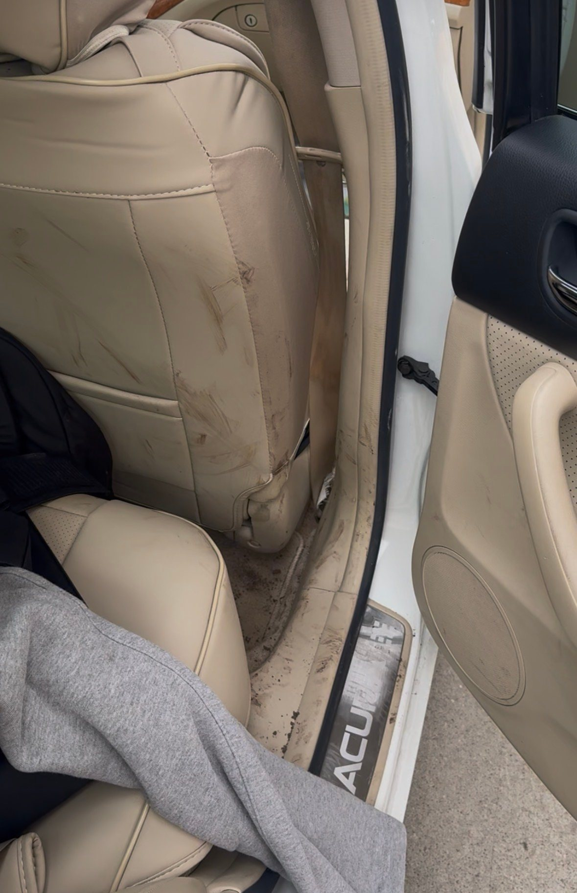
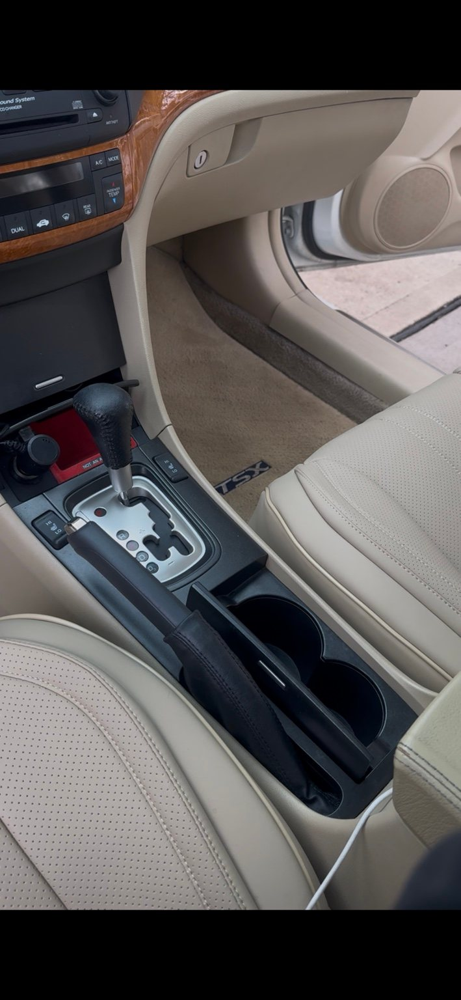

Midwest Cabin Refresh
Interior Detail
Starting at
$159
View DetailsProfessional mobile detailing across Johnson County. Premium results, right at your home.
Book Your Detail →Choose the package that fits your vehicle and your needs.
Interior Detail

Exterior Detail

Complete Detail

Monthly Maintenance
A closer look at an Acura interior detail, from the rear seating area to the center console.

Before After
After
The finishProfessional mobile detailing throughout Johnson County, Kansas.
Yes. We ask customers to provide access to an outdoor water hookup and a standard electrical outlet at the service location.
Payment is due after the detail is complete. No online payment is required when requesting an appointment.
You can book online using our live calendar. After submitting, check the result on screen: “Appointment Booked” means your appointment is confirmed; “Appointment Requested” means it is awaiting approval. We’ll text the mobile number you provide if we need to confirm details or update your appointment.
Yes, heavy pet hair removal is available as an add-on. Price is determined after inspecting your vehicle.
If weather, an earlier appointment, or an unexpected issue delays your arrival window or means we need to cancel or reschedule, we’ll text the mobile number you provide. Please use a number where we can reach you on the day of your detail.
If your plans change, call (913) 905-9935 or send a text as soon as possible so we can help cancel or move your appointment. If I don’t answer, please leave a message.
Johnson County, Kansas.
Call or text (913) 905-9935 for questions, a vehicle quote, cancellations, or rescheduling.
If I don’t answer, please leave a message.